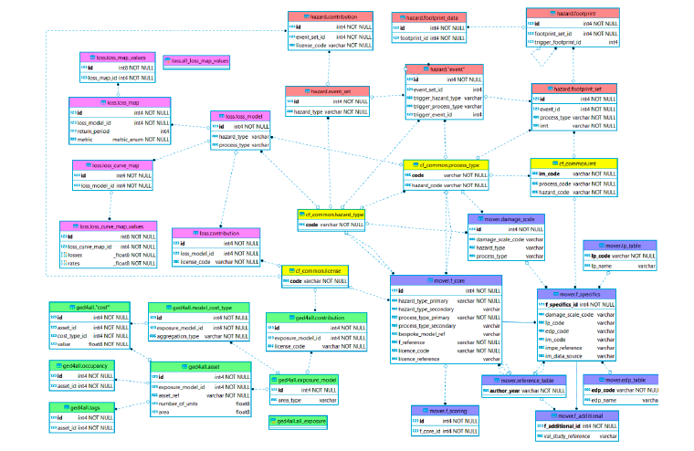

DATABASE SCHEMA OVERVIEW
high-level simplified UML-style diagram that focuses on the core relationships between entities, rather than listing all of their attributes. This helps to put the various entities in context. a description of how the key elements of the model fit together, with pointers to the detailed sections
The Risk DB schema includes four components:
- Hazard DB schema: describes hazard scenario footprints and return period hazard maps
- Exposure DB schema: describes exposed assets and population
- Vulnerability DB schema: describes physical vulnerbaility, fragility and damage-to-loss models
- Loss DB schema: describes modelled damage and losses produced in a risk assessment
Below is a simplified entity-relationship diagram of the whole database schema. All tables are shown but only key fields are included in each table.

ERD for Risk Data schema including all components (Hazard, Exposure, Vulnerability and Loss). Yellow = common tables; Red = hazard tables; Green = Exposure tables; Purple = vulnerability tables; Violet = loss table.